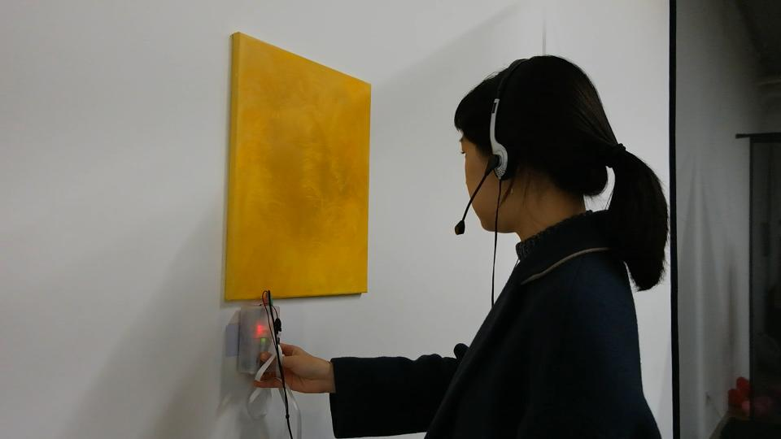

Audio Guide
Audio Guide (2019)- Individuals often have a strong inclination to accept anything related to technology without questioning its validity.
My aim was to highlight this phenomenon critically.
To achieve this, I opted to utilize computer-generated descriptions of artworks
in lieu of the artist's original intentions and paired them with a fabricated audio guide.
Although participants initially detected an issue with the audio guide, they gradually began to find a correlation between
the computer-generated descriptions and the artwork they were viewing. -

- 
Materials: Arudino nano, NFC, headphones, and PLA print